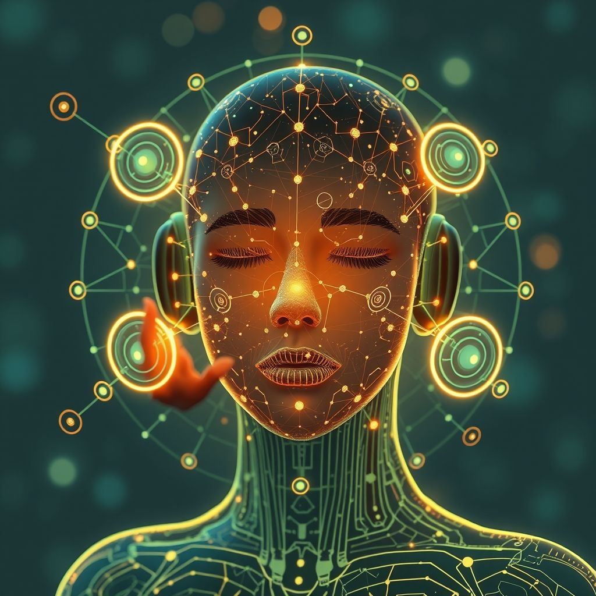

Definición de la IA Generativa
La Inteligencia Artificial Generativa es una rama avanzada del aprendizaje automático que se enfoca en crear sistemas capaces de generar contenido original, desde texto y imágenes hasta música y video. Utiliza redes neuronales complejas, como los modelos de lenguaje y generativos, para sintetizar datos nuevos basados en patrones aprendidos.
Esta tecnología permite crear simulaciones realistas, asistir en procesos creativos y automatizar tareas que requieren generación de datos novedosos y contextualmente relevantes.
Usos en la vida cotidiana
La IA Generativa se ha integrado en diversas aplicaciones que facilitan y enriquecen la vida diaria, tales como asistentes virtuales inteligentes, generación automática de texto para correos electrónicos o contenidos, creación de imágenes artísticas, diseño de productos, y personalización de experiencias digitales.
En entretenimiento y medios, permite la creación de música y videos personalizados, mientras que en la educación soporta la creación de recursos didácticos adaptativos y simulaciones interactivas.
Futuro de la IA Generativa
El futuro de la IA Generativa se proyecta con avances que mejorarán la creatividad humana, automatizarán procesos complejos y abrirán nuevas oportunidades en campos como la medicina, la ingeniería y el arte. Se espera que los modelos sean cada vez más precisos, eficientes y éticos, favoreciendo una colaboración armoniosa entre humanos y máquinas.
Asimismo, habrá un enfoque creciente en la responsabilidad, privacidad y regulación para asegurar que estas tecnologías se utilicen de manera segura y beneficiosa para la sociedad.